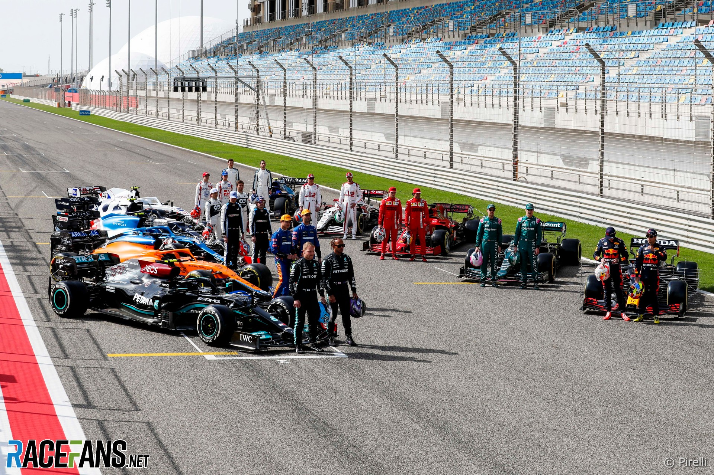
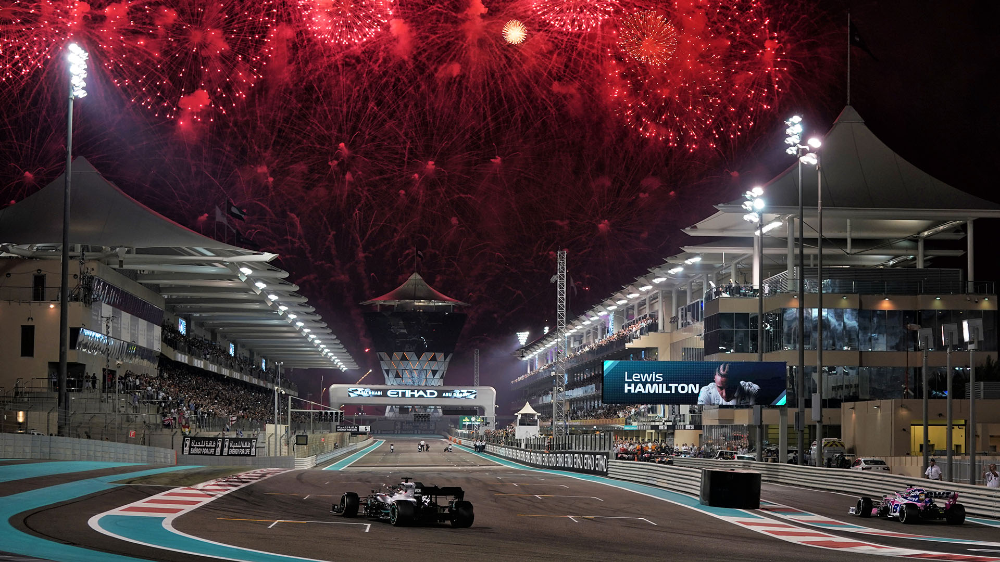

Alla förarna 2021
Lagen och förarna
- Mercedes
Lewis Hamilton(GBR) / Valteri Bottar(FIN) - Red Bull
Max Verstappen(NLD) / Sergio Perez(MEX) - Mclaren
Lando Norris(GBR) / Daniel Ricciardo(AUS - Aston martin
Lance Stroll(CAN) / Sebastian Vettel(GER)
- Alpine Renault
Fernando Alonso(ESP) / Esteban Ocon(FRA) - Ferrari
Charles Leclerce(MCO) / Carlos sainz(ESP) - Alpatauri
Pierre Gasly(FRA) / Yuki Tsunoda(JPN) - Alfa Romeo
Kimi Räikkönen(FIN) / Antonio Giovinazzi(ITA) - HAAS
Mick Schumacher(GER) / Nikita Mazepin(RUS) - Williams
George Russel(GBR) / Nicholas Latifi(CAN)

Finalen i Abu Dhabi 2019
Kalendern 2021 (Just nu)
- 26-28 Mars Bahrain (Bahrain International Circuit)
- 16-8 April Italien (Imola)
- 30-02 April-Maj (Portimao)
- 07-09 Maj Spanien (Circuit de Barcelona-Catalunya)
- 20-23 Maj Monaco (Monte carlo)
- 04-06 Juni Azerbaijan(Baku City Circuit)
- 18-20 Juni Frankrike (Circuit Paul Ricard)
- 25-27 Juni Österike (Red bull ring)
- 02-04 Juli Österrike 2 (Red bull ring)
- 16-18 Juli England (Silverstone)
- 30-01 Juli-Aug Ungern (Hungaroring)
- 27-28 Augusti Belgien (Circuit de Spa-Francorchamps)
- 03-05 September Nedeländerna (Circuit Zandvoort)
- Italien (Monza)
- Ryssland (Sochi Autodrom)
- Singapore (Marina Bay Street Circuit)
- Japan (Suzuka International Racing Course)
- USA (Circuit of The Americas)
- Mexico (Autódromo Hermanos Rodríguez)
- Brasilien (Autódromo José Carlos Pace)
- Australien (Melbourne Grand Prix Circuit)
- Saudiarabien (Jeddah Street Circuit)
- Förenade arabemiraten/Abu dhabi (Yas Marina Circuit)